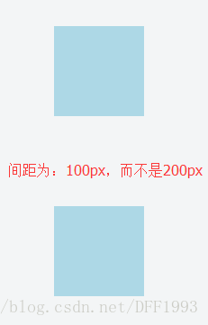
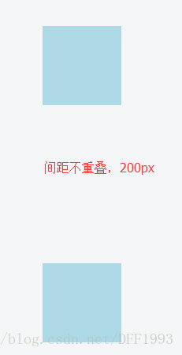
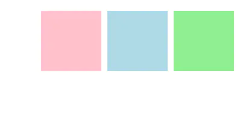
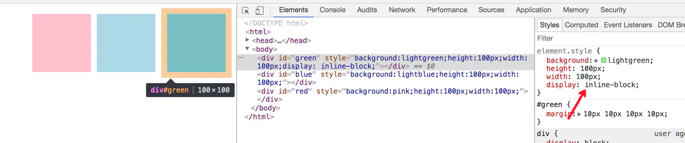
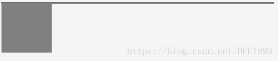
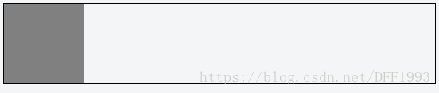
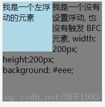
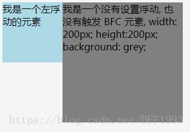

不懂BFC，所以要学一学BFC。
常见布局模式
CSS中的三种布局模型：流动模型（Flow）、浮动模型（Float）和层模型（Layer）。
BFC概念
Block fomatting context = block-level box + Formatting Context
Box
Box即盒子模型；
- block-level box 即块级元素
display属性为
block,list-item,table的元素，会生成block-level box；并且参与block fomatting context每个块级元素至少生成一个块级盒（
block-level Box）参与 BFC ，称为主要块级盒(principal block-level box) - inline-level box 即行内元素
display 属性为
inline,inline-block,inline-table的元素，会生成inline-level box。并且参与inline formatting context行内级元素生成行内级盒(inline-level boxes)，参与行内格式化上下文 IFC 。
- flex container：当元素的 CSS 属性 display 的计算值为
flex或inline-flex，称它为弹性容器。display:flex这个值会导致一个元素生成一个块级（block-level）弹性容器框。display:inline-flex这个值会导致一个元素生成一个行内级（inline-level）弹性容器框。 - grid container：当元素的 CSS 属性 display 的计算值为 grid 或
inline-grid，称它为栅格容器。
Formatting context
Formatting context是W3C CSS2.1规范中的一个概念。它是页面中的一块渲染区域，并且有一套渲染规则，它决定了其子元素将如何定位，以及和其他元素的关系、相互作用。
最常见的 Formatting context 有 Block fomatting context (简称BFC)和 Inline formatting context(简称IFC)。
BFC 定义
BFC 即 Block Formatting Contexts (块级格式化上下文)，它属于上述布局模式的流动模型。是W3C CSS2.1规范中的一个概念，决定了元素如何对其内容进行定位，以及与其他元素的关系和相互作用。
具有BFC特性的元素可以看做是隔离了的独立容器，容器里面的元素不会在布局上影响到外面的元素，并且BFC具有普通容器所没有的的一些特性。
形成BFC的条件
BFC是一块渲染区域，那这块渲染区域到底在哪，它又是有多大，这些由生成BFC的元素决定，CSS2.1中规定满足下列CSS声明之一的元素便会生成BFC。
BFC的生成
只要元素满足下面任一条件即可触发BFC特性：
- html根元素
- 浮动元素：
float除none以外的值 - 绝对定位元素：
position(absolute、fixed) -
display不是block的块(inline-block、table-cell（表格单元格）、table-caption（表格标题）) -
overflow除了visible以外的值 (hidden、auto、scroll) -
display为flex、grid、flow-root的元素(flow-root为专门设置BFC的属性值)
BFC包含创建该上下文元素的所有子元素，但不包括创建了新BFC的子元素的内部元素。
BFC的约束规则
- 内部的Box会在垂直方向上一个接一个的放置
- 垂直方向上的距离由margin决定。（完整的说法是：属于同一个BFC的两个相邻Box的margin会发生重叠（塌陷），与方向无关。）
- 每个元素的左外边距与包含块的左边界相接触（从左向右），即使浮动元素也是如此。（这说明BFC中子元素不会超出他的包含块，而position为absolute的元素可以超出他的包含块边界）
- BFC的区域不会与float的元素区域重叠
- 计算BFC的高度时，浮动子元素也参与计算
- BFC就是页面上的一个隔离的独立容器，容器里面的子元素不会影响到外面元素，反之亦然
BFC常见作用
阻止外边距折叠
问题案例：两个相邻Box垂直方向margin重叠 <head>
div{
width: 100px;
height: 100px;
background: lightblue;
margin: 100px;
}
</head>
<body>
<div></div>
<div></div>
</body>

从效果上看，因为两个div元素都处于同一个BFC容器下（这里指html根元素），所以第一个div的下边距和第二个div的上边距发生了重叠，所以两个盒子之间距离只有100px，而不是200px。
这是一种规范：如果想要避免外边距的重叠，可以将其放在不同的 BFC 容器中。
<div class="container">
<p></p>
</div>
<div class="container">
<p></p>
</div>
.container {
overflow: hidden;
}
p {
width: 100px;
height: 100px;
background: lightblue;
margin: 100px;
}

问题案例：相邻Box水平方向margin重叠<!doctype HTML>
<html>
<head>
<style type="text/css">
#green {
margin:10px 10px 10px 10px
}
#blue {
margin:10px 10px 10px 10px
}
#red {
margin:10px 10px 10px 10px
}
body {
writing-mode:tb-rl;
}
</style>
</head>
<body>
<div id="green" style="background:lightgreen;height:100px;width:100px;"></div>
<div id="blue" style="background:lightblue;height:100px;width:100px;"></div>
<div id="red" style="background:pink;height:100px;width:100px;"></div>
</body>
</html>

我们可以给div加个display:inline-block，触每个div容器生成一个BFC。那么三个DIV便不属于同一个BFC（这个只body根元素形成的BFC），就不会发生margin重叠了。

问题案例：嵌套元素的margin重叠<!DOCTYPE html>
<html>
<head>
<meta http-equiv="Content-Type" content="text/html; charset=utf-8">
<!--The viewport meta tag is used to improve the presentation and behavior of the samples
on iOS devices-->
<meta name="viewport" content="initial-scale=1, maximum-scale=1,user-scalable=no"/>
<title></title>
<style>
html, body { height: 100%; width: 100%; margin: 0; padding: 0; }
#map{
padding:0;
}
.first{
margin:20px;
background:lightgreen;
width:100px;
height:100px;
}
ul{
/*display:inline-block;*/
margin:10px;
background:lightblue;
}
li{
margin:25px;
}
</style>
</head>
<body class="claro">
<div class="first"></div>
<ul>
<li>1</li>
<li>2</li>
<li>3</li>
</ul>
</body>
</html>
- 此时
div与ul之间的垂直距离，取div、ul、li三者之间的最大外边距（只需让ul生成BFC，这样div、ul、li之间便不会发生重叠现象）。 - 而
li位于同一BFC内所以仍然存在重叠现象（给li设置line-block重新生成一个bfc就不存在重叠现象了）。
注意：如果为ul设置了border或padding，那元素的margin便会被包含在父元素的盒式模型内，不会与外部div重叠。
包含浮动元素
问题案列：高度塌陷问题，在通常情况下父元素的高度会被子元素撑开，而在这里因为其子元素为浮动元素所以父元素发生了高度坍塌，上下边界重合，这时就可以用BFC来清除浮动了。
<div style="border: 1px solid #000;">
<div style="width: 100px;height: 100px;background: grey;float: left;"></div>
</div>

由于容器内元素浮动，脱离了文档流，所以容器只剩下2px的边距高度。如果触发容器的BFC，那么容器将会包裹浮动元素。
<div style="border: 1px solid #000;overflow: hidden">
<div style="width: 100px;height: 100px;background: grey;float: left;"></div>
</div>

阻止元素被浮动元素覆盖
问题案例：div浮动兄弟触发该问题：由于左侧块级元素发生了浮动，所以和右侧未发生浮动的块级元素不在同一层内，所以会发生div遮挡问题。可以给右侧元素添加 overflow: hidden，触发BFC来解决遮挡问题。
<div style="height: 100px;width: 100px;float: left;background: lightblue">
我是一个左浮动的元素
</div>
<div style="width: 200px; height: 200px;background: grey">
我是一个没有设置浮动, 也没有触发 BFC 元素, width: 200px; height:200px; background: grey;
</div>

这时候其实第二个元素有部分被浮动元素所覆盖，但是文本信息不会被浮动元素所覆盖，如果想避免元素被覆盖，可触发第二个元素的BFC特性，在第二个元素中加入overflow：hidden，就会变成：
<div style="height: 100px;width: 100px;float: left;background: lightblue">
我是一个左浮动的元素
</div>
<div style="width: 200px; height: 200px;background: grey;overflow:hidden">
我是一个没有设置浮动, 也没有触发 BFC 元素, width: 200px; height:200px; background: grey;
</div>

这个方法可以用来实现两列自适应布局，效果不错，这时候左边的宽度固定，右边的内容自适应宽度。